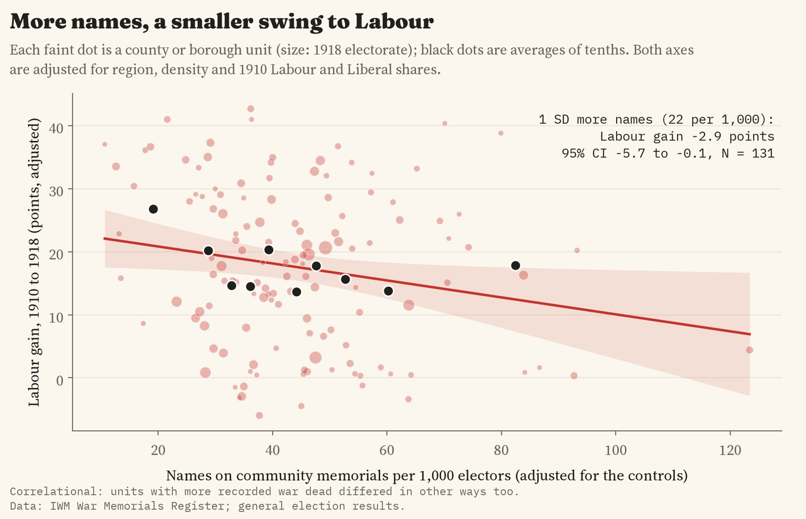
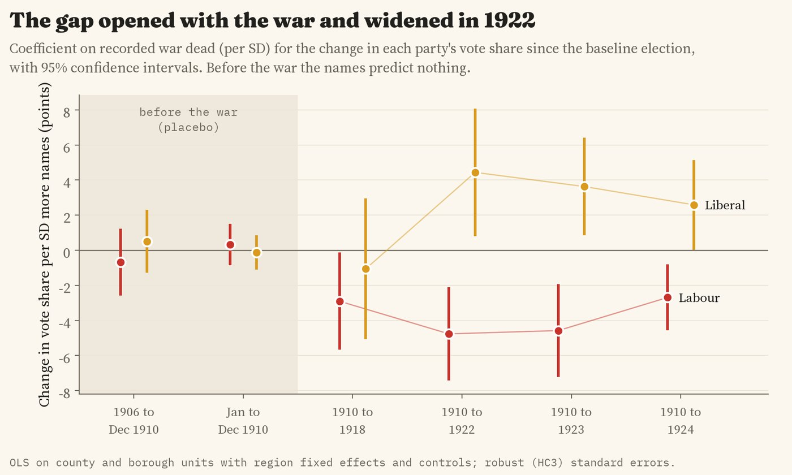
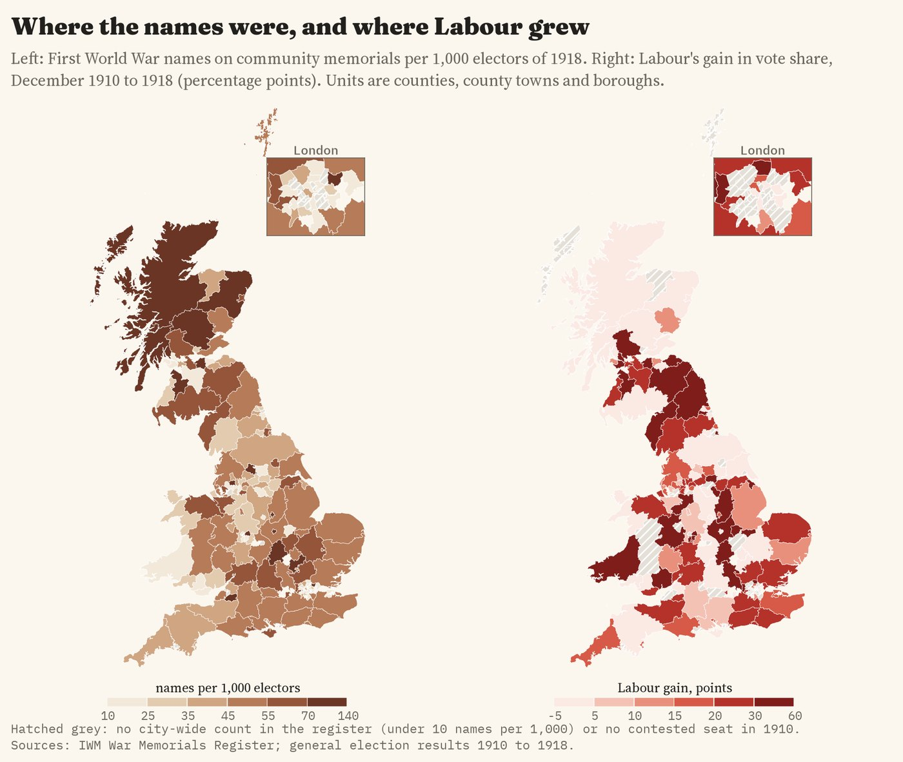
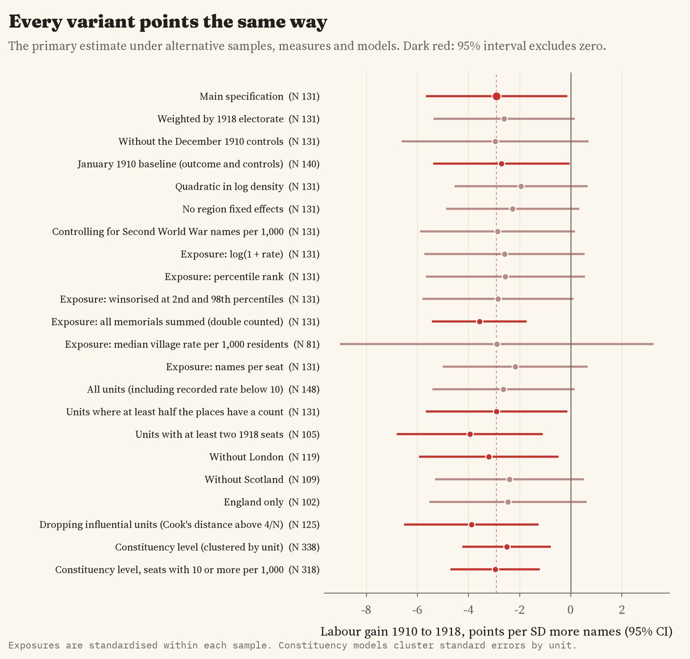
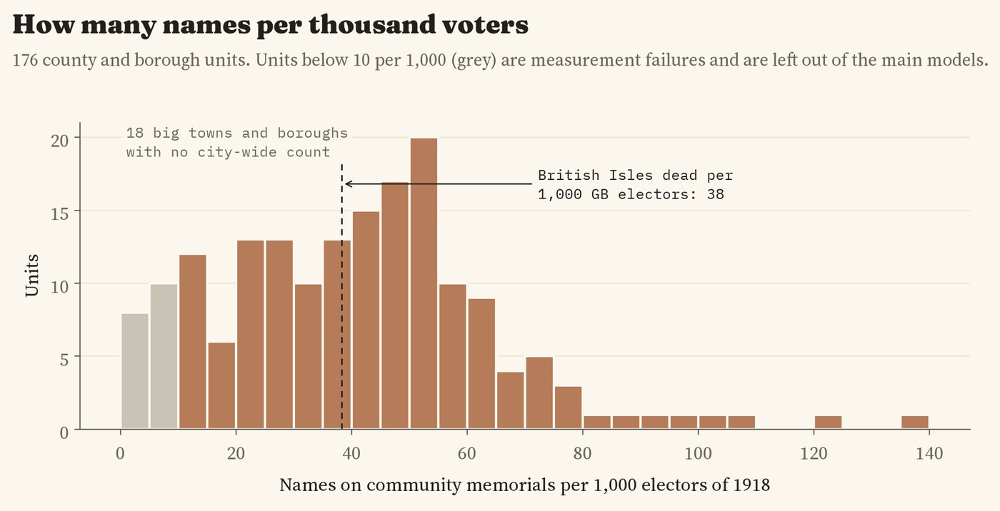

Did places that lost more men in the First World War turn to Labour? Names on community war memorials per 1,000 voters of 1918, for 176 counties and boroughs, beside the vote in every election from 1910 to 1924. Tap anywhere for the numbers.
In December 1918, a month after the Armistice, Britain held its first general election in eight years, on an electorate 2.8 times as large in Great Britain. Labour's share of the vote in contested seats in Great Britain rose from 6.8% in December 1910 to 23.8%, and kept rising. Did the places that had lost the most men lead the way? I set the names on community war memorials against the vote, place by place.
Historians have long argued about why Labour replaced the Liberals as the main party of the left after the First World War. One side points to the 1918 Representation of the People Act, which gave the vote to most working men and to women over 30; another to the war itself, which split the Liberals and drew trade unions into the state. Studies of other countries suggest that heavy local losses could push voters in different directions: towards the radical left or right in Italy and Germany, towards the governing coalition in a patriotic "khaki" election, or simply out to vote. As far as I can find, no one has tested whether British places that lost more men voted differently between the parties. The difficulty is the data: there is no list of deaths by constituency, and no maps of the 1918 seats.
So I used two datasets I had already built: the names on every First World War memorial in the Imperial War Museums' register, counted once per place, and the result in every constituency from 1906 to 1924. I wrote down in advance what I would test and what would count against each idea, then linked the two by county and borough.
Across the 131 counties and boroughs with a usable count and a contested seat in both elections, Labour's share rose on average by 17.6 points between December 1910 and 1918. Where there were more names per voter, it rose by less. For each standard deviation more names (22 per 1,000 voters), Labour's gain was 2.9 points smaller (95% confidence interval 0.1 to 5.7), after allowing for region, how built up the place was, and how strong Labour and the Liberals had been in 1910. That is about a fifth of the usual spread in Labour's gain. It is not a large effect, and on its own the evidence for it is moderate: if there were no real link, a pattern this strong would turn up by chance with probability about 0.04, but I tested four outcomes, and corrected for that the figure is 0.16.

Labour's gain from 1910 to 1918 against memorial names per 1,000 voters, adjusted for region, density and the 1910 vote.
The Coalition of Lloyd George and the Conservatives, whose candidates carried the "coupon", did a little better where there were more names (+3.7 points per standard deviation), but the interval runs from -1.8 to 9.2, so I cannot tell it from no difference. Neither the Liberal collapse nor turnout followed the names.
If the names were just picking up something about a place, like its industry or its politics before the war, they should predict how it voted before the war too. They do not. I ran the same model on the changes between 1906 and December 1910, between the two elections of 1910, and on the 1910 vote itself: in none of the six tests do the names predict anything. After the war the gap grows. By 1922 Labour's gain since 1910 was 4.8 points smaller for each standard deviation more names (2.1 to 7.4), and the Liberals held up 4.4 points better. By 1924 the Labour gap had narrowed to 2.7 points.

How the vote changed with memorial names, election by election. The shaded pre-war tests are placebos.

Left: memorial names per 1,000 voters of 1918. Right: Labour's gain from 1910 to 1918.
I re-ran the main model 21 ways: weighting by the size of the electorate, changing the baseline election, measuring the names differently, dropping London or Scotland, dropping unusual places, and working at the level of single constituencies. All 21 estimates are negative and 8 are clearly different from zero; the others are smaller or less precise. Leaving out each region in turn gives estimates from 2.2 to 3.4 points smaller, though in 5 of the 11 runs the interval includes zero. Shuffling the names at random within regions, 2,000 times, gives a pattern as strong as the real one 2.7% of the time.

The main estimate under other samples, measures and models.
One check changes how I read the result. In counties and boroughs where Labour stood a candidate in 1918, the names barely predict how well it did (-1.0 points, interval -3.5 to 1.5). Much of the gap seems to come from where Labour stood at all: places with more names had fewer Labour candidates. I did not plan this check, so treat it as a lead.
The data give no support to the idea that heavy local losses drove voters to Labour in 1918. If anything, the places with more names stayed with the older parties for longer. This is a pattern, not proof of cause. Men did not die at random: the volunteers of 1914 and 1915 came disproportionately from some trades and places, and men in mining, munitions and shipbuilding were often kept at home. Those industrial places were also where Labour grew fastest. I have no figures on industry for 1918, so part of what the memorials measure may be who volunteered, not who grieved. The dead also could not vote. Even if every one of them would have voted Labour and turned out like everyone else, their absence could explain at most about 2.2 of the 2.9 points per standard deviation in 1918, and realistically far less; it cannot explain the larger gap in 1922.
Memorials. The Imperial War Museums' War Memorials Register, grouped into 17,689 places in Great Britain. For each place I take the one community memorial with the most names of the dead (a church memorial where no community memorial gives a count), so that a man named on a village cross, a church board and a works roll is counted once. That gives 717,287 names, close to the roughly 744,000 dead and missing from the whole British Isles. Many memorials carry no count, and 18 big towns and London boroughs have no city-wide roll in the register at all (Plymouth, Portsmouth and Bristol among them); I leave those out of the main models, and put them back in as a check.

Memorial names per 1,000 voters of 1918 across the units.
Seats and units. There are no digital boundary maps of the 1918 constituencies, so I used a common container: each English county, with its big towns, cities and London boroughs as separate units, the Welsh counties and the Scottish council areas, 176 units in all. Seats from 1906 to 1924 go into units by a point for each seat, and memorials by their own position. The voters of 1918 are worked out from each seat's votes and turnout. As a check I also linked each memorial to its nearest 1918 seat: of 365 places that share their name with a nearby borough seat, 92% went to that seat and 97% to the right unit.
The plan. Before running any model of the vote, I wrote down the hypotheses, the main model, the checks and what would count against each idea. Two changes were made before any model was run, both because of the memorial data, and both are in the notes. The main model compares units within the same region (ordinary least squares, robust standard errors), with population density and the 1910 Labour and Liberal shares as controls.
What this cannot say. Memorial names are not a census of the dead: counts are missing, rounded or include men who lived elsewhere, and a place's memorial may be a parish, a village or part of a town. Electorates are worked out, not recorded, and 79 seats were not contested in 1918. A county unit is a blunt instrument: a mining valley and a market town in the same county share one number. And places that lost more men differed in other ways that I cannot measure.